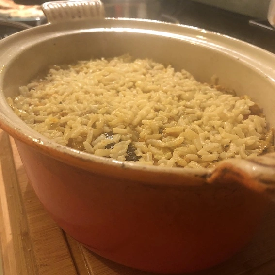
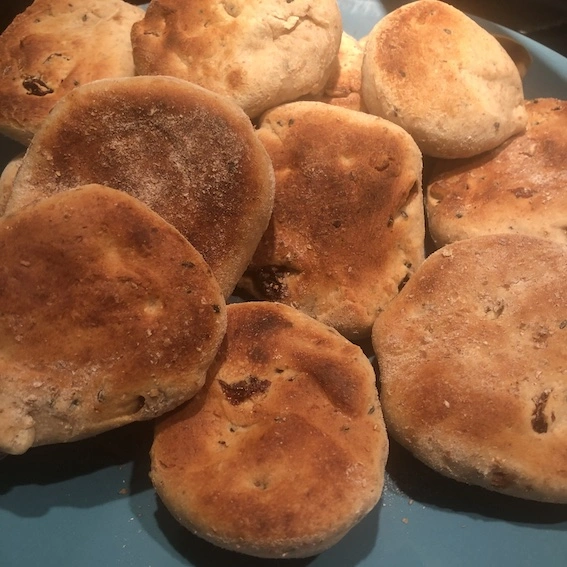

Week 2 Challenge: Making a healthy snack from food cupboard contents
The Waste Not, Want Not workshop ended with four challenges being set.
For week 2, we had to use items we already had in our store cupboards to make a healthy snack.
Bonus points were available for finding 5 food items that had’t been seen or used in 3 months, and identifying a recipe that uses them.
And we had to seek out our most out of date food product!
Our out of date product
I'd been given to understand that a 2022 jar of Marmite was challenging for top spot as the most out of date product.
I didn't think that was too bad. Not a fan anyway so it wasn't going to be incorporated into a delicious treat. And it's only my husband who'd be risking food poisoning by eating it so it's up to him whether it stays or goes.
We did have some pre-pandemic Cheerios, but my eldest daughter had already decided they weren't edible.
So in top spot is a 2017 tub of custard powder. I'm sure I've served custard since 2017 with no ill effects so it will stay in the cupboard for the time being until it's scrutinised more closely.
Our food cupboard recipe
I decided to make something with elderly cashews, unwanted nigella seeds, bottled figs, various stalks and wilted veg. Also added to the mix was the pumpkin and leftover chicken in the freezer than was going to make its way into the dog’s bowl. Don't worry he still got plenty to eat.
I'd flirted with the idea of a nut roast, but opted to keep that in reserve. We'd still have cashews to spare and have hazelnuts and almonds to use up.
Instead, I found recipes for biryani that could accommodate some of my ingredients and would be forgiving of me adding the rest! This BBC Food recipe for biryani (opens in a new tab) was the inspiration.
Then for good measure we made naan bread with cashews and nigella seeds as additives (just the dough recipe that came with the breadmaker – what? You expected me to do some kneading?)
